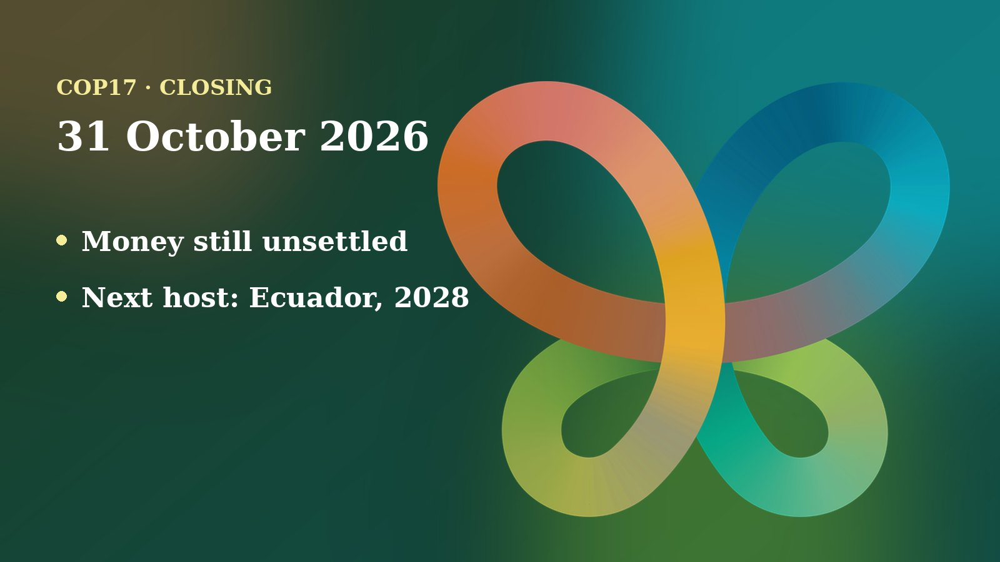

The 17th UN Biodiversity Conference ended in Yerevan after two weeks of talks. According to AFP, nearly 200 countries reached agreements on Friday 30 October, and other issues ran into the early hours of Saturday. The first global review of the nature pact was adopted. But the hardest question, who pays for nature, was not settled. I could not read the final decision texts or an official closing report when I wrote this, so this post relies on news reports and says clearly where details are missing.
The day in negotiations
The last day opened with work still to do. At 14:05 on Friday, Armenpress reported that the final formal plenary sessions were under way. COP17 President Hambardzum Matevosyan, Armenia's Environment Minister, said on Facebook that parties were working for consensus on key issues and needed a willingness to compromise. The day before, my 30 October recap described a closing day full of brackets, the marks that show words countries cannot yet agree on, including the fight over the paragraph on harmful subsidies (Target 18).
Texts passed in overtime. According to AFP, as published by Kuwait Times, Matevosyan approved the key texts in overtime and delegates cheered. The "global review", the first check of how the world is doing against the 2030 nature goals, was adopted. AFP said it had not been published hours later, so it was unclear which recommendations made the final text. A draft had urged countries to "accelerate" their efforts.

Harmful subsidies: a small step. AFP reported modest progress on subsidies that damage nature, such as those for fossil fuels, intensive farming and overfishing. Observers called the decision text weak. AFP put the money still flowing to harmful subsidies at about $2.4 trillion a year. Earlier in the week, Climate Current reported that Colombia and Finland, backed by France, had launched an initiative to speed up reform of such subsidies.
Left unresolved. AFP described conservation finance as the main open question. The world needs roughly $700 billion a year more than it spends, and the EU pushed for wealthy emerging economies such as China to contribute, which stayed contentious. A compromise draft only invited countries outside the traditional donor group to join voluntarily and "signal interest". As Climate Home News reported before the end, the Arab Group rejected any attempt to widen the donor list. The Cali Fund, which is meant to share profits from the use of genetic data, had received only about $10,000 against a goal of $1 billion a year (AFP). AFP also said a few countries were accused of using climate-talk tactics to weaken the role of the UN-backed science panel on biodiversity.
Next host. AFP reported that Ecuador beat Panama in a secret ballot, early on Saturday, to host the next biodiversity talks in 2028.
Positions and stakeholders
What I could confirm, group by group, comes from the reports above and the Climate Home piece:
- European Union: pressed for emerging economies to count as contributors; Environment Commissioner Jessika Roswall said the EU would keep its commitments but cannot close the gap alone (Climate Home News).
- Arab Group: opposed widening the donor list or reclassifying countries (Climate Home News).
- African Group: called for stronger public finance, calling the UN findings a serious warning (Climate Home News).
- Environmental groups: Fauna and Flora's Catherine Weller said it was good news that countries reached agreement, though not exciting. WWF's Kirsty Leong saw strengths and weaknesses but a good result on balance. Greenpeace's An Lambrechts saw political momentum on harmful incentives, in weak wording (AFP).
AFP said Indigenous leaders and civil society urged more urgency; I could not confirm what the final texts say on Indigenous rights. Announcements along the way: Climate Current listed more than $500 million of added commitments to the Global Environment Facility, and over $1.8 billion in nature finance announced by Armenia's presidency in week one, plus $500 million for species recovery. Armenia and UNEP also announced a global mountain-ecosystems initiative.
Numbers to know
- Nearly 200: countries behind the agreements adopted on 30 October (AFP).
- About $700 billion a year: the estimated missing money for nature, against a goal of $200 billion a year from all sources by 2030 (AFP; Climate Home News).
- About $10,000: raised so far by the Cali Fund (AFP).
- About $2.4 trillion a year: estimated harmful subsidies (AFP).
- 14 decisions: adopted in the first week, including biosafety, invasive alien species and gender equality, said Executive Secretary Astrid Schomaker (CBD Secretariat).
Through a child and youth lens
I follow this process as a member of the UNICEF Global Delegation, and I advocate for including children and young people in the CBD process. In the closing coverage I could read, children and youth were not mentioned at all. I will not guess what the final texts say about them.
What I can say is which decisions decide their future. A global review that is adopted but unpublished cannot yet be held to account by young people. Finance that stays about $700 billion short means fewer funded protected areas for today's children to inherit. The weak subsidy wording matters because those subsidies shape land, seas and food for decades. And the science panel is where children's evidence on nature is turned into advice.
UNICEF Armenia prepared material for adolescents and young people before the conference, and Armenia's young people produced a National Youth Statement. The next step is to read the published decisions and check whether youth participation, and intergenerational fairness, were kept in the text.
What to watch next
- The published texts: the final global review and decisions, from the CBD and the Earth Negotiations Bulletin summary.
- Money: whether emerging economies volunteer to contribute, and whether the Cali Fund fills.
- Road to 2028: Ecuador as host, and national plans before then.
- Analysis: the SEI post-COP17 discussion on 5 November.
Follow where I am each day on my COP17 schedule, and the daily news in the Newsroom.
Sources
- Nations agree to get UN nature goals back on track (AFP, via Kuwait Times, 31 Oct 2026). https://kuwaittimes.com/article/52707/world/nations-agree-to-get-un-nature-goals-back-on-track/
- COP17 final formal plenary sessions underway (Armenpress, 30 Oct 2026). https://armenpress.am/en/article/1264324
- COP17 Biodiversity Summit: New funding pledges offer hope (Climate Current, 30 Oct 2026). https://climatecurrentorg.substack.com/p/cop17-biodiversity-summit-new-funding
- Stalemate on finance at COP17 nature talks exposes need for new sources (Climate Home News, 28 Oct 2026, updated 29 Oct). https://www.climatechangenews.com/2026/10/28/stalemate-finance-cop17-nature-un-exposes-need-new-sources-yerevan/
- Spotlight on Yerevan: Announcements from the 2026 UN Biodiversity Conference (CBD Secretariat). https://www.cbd.int/article/2026-10-18-06-36-57
- What adolescents and young people should know about COP17 (UNICEF Armenia). https://www.unicef.org/armenia/en/stories/what-adolescents-and-young-people-should-know-about-cop17